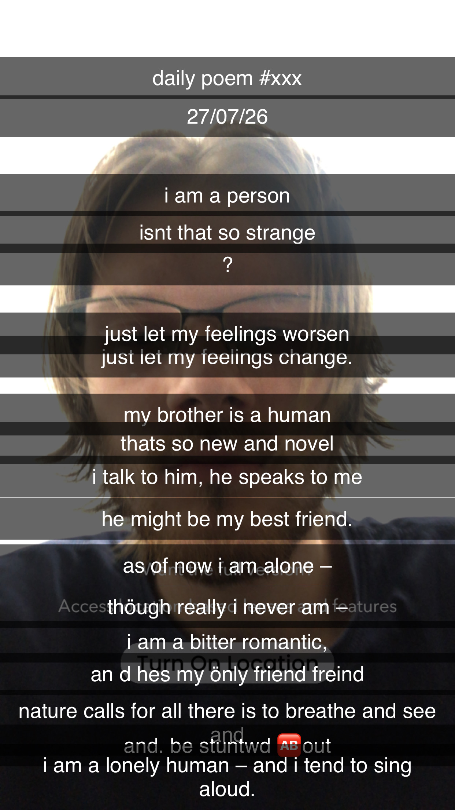

drunk poem
i am a person
isnt that so strange
?
just let my feelings worsen
just let my feelings change.
my brother is a human
thats so new and novel
i talk to him, he speaks to me
he might be my best friend.
as of now i am alone –
thöugh really i never am –
i am a bitter romantic,
an d hes my önly friend freind
nature calls for all there is to breathe and see
and
and. be stuntwd about
i am a lonely human – and i tend to sing aloud.
